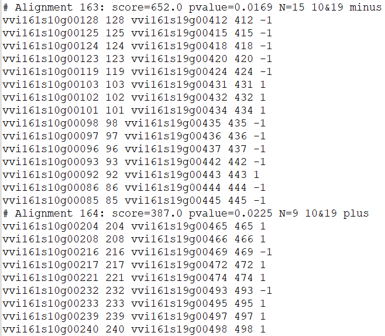

Improved collinearity
The algorithm for extracting collinearity is based on the dynamic programming algorithm, similar to the ColinearScan and MCScan.
Parameters
Parameters |
Standards and instructions |
multiple |
Type: int | Default: 1 The best number of homologous genes shown with red dots. |
evalue |
Type: float | Default: 1e-5 Evalue in the blast result. |
score |
Type: int | Default: 100 Score value in the blast results. |
grading |
Type: int , int , int | Default: 50, 40 , 25 Assign different scores based on the colors in the dotplot, with a default of 50 for red, 40 for blue, and 25 for gray. |
mg |
Type: int , int | Default: 40, 40 The maximum gap(mg) value is an important parameter for detecting collinear regions. |
comparison |
Type: { genomes, chromosomes } | Default: genomes When comparing with the fusion positions database, use ‘chromosomes’; otherwise, use ‘genomes’. |
pvalue |
Type: float | Default: 1 Evaluate the compactness and uniqueness of collinear blocks, the range is 0-1, and the better collinearity range is 0-0.2. |
repeat_number |
Type: int | Default: 10 The maximum number of homologous genes is allowed to remove more than part of the population. |
process |
Type: int | Default: 8 Number of multiple processes. |
position |
Type: order | Default: order The position of a gene corresponds to the gff file. |
Use command to enter the folder wgdi -icl ? >> total.conf Take out the parameter file.
[collinearity]
gff1 = gff1 file
gff2 = gff2 file
lens1 = lens1 file
lens2 = lens2 file
blast = blast file
blast_reverse = false
comparison = genomes
multiple = 1
process = 8
evalue = 1e-5
score = 100
grading = 50,30,25
mg = 25,25
pvalue = 1
repeat_number = 20
positon = order
savefile = collinearity file
Quick start
After the parameters are modified properly, then run wgdi -icl total.conf
Example
The original results are easily accessible at wgdi-example
